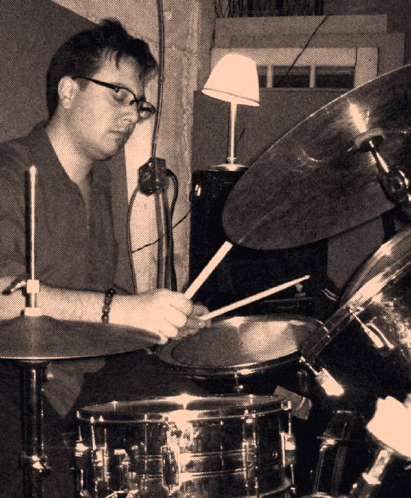
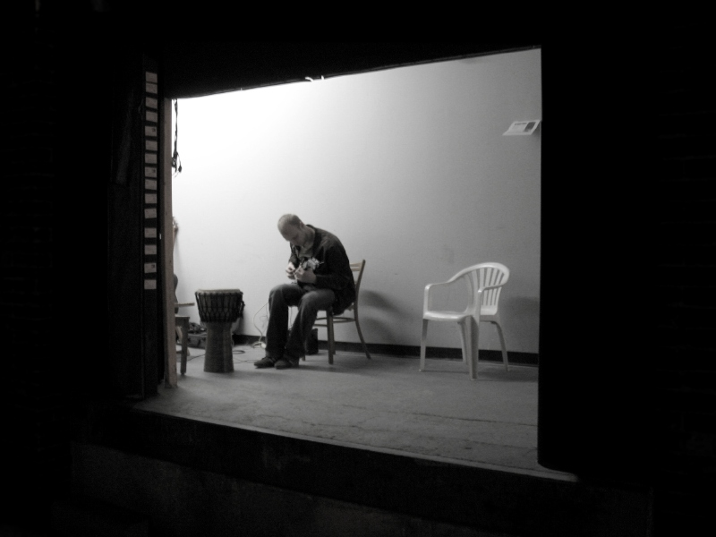

| Blog |
|
Q: So, what about The Cliff, then?
A: We are The Cliff. Everything we do is improvised. The Cliff is a collective of Toronto, Canada, improvisational musicians linked by their propensity for musical unpredictability. When we play, you don't know what you will hear, and neither do we. Q: What does The Cliff sound like? A: There are some audio samples on this page and here as well. To use musical genres, if you aren't able to listen or need to verbally describe our 'sound', please allow us to suggest this to describe our influences; ambient dada world fusion
rock punk soundscape funk ska country reggae goth polka trance blues prog* *Please note: not all genres necessarily represented by audio samples on this site. Q: What is 'Plummet'?
A: Plummet is our first CD, a compilation of highlights from the recording of our August 26, 2005 live performance at Oasis, for the launch of 'The Cliff', an independent comic by member Matthew Brown from where we get our name. Q: Doesn't the poster say 'Music by Oo Ma Theremin'? A: Yes, Oo Ma made an appearance that evening. Q: Does Oo Ma still play with The Cliff? A: From time to time, yes. Although really, we play with Oo Ma, not the other way around. Q: And what is 'Earworms'? A: Our second CD, recorded April 7, 2007, at a top-secret rehearsal bunker, with wetbar, tube lights and comfy couches. Q: What is an earworm? A: Earworm is the English translation for the German word 'ohrwurm' that describes a piece of music that is stuck in your head and cannot get rid of. Q: And 'Ganja Poodle'? A: Our first CD compiling recordings from more than one date, January 11 and March 24, 2006. Chronologically, this is the second recorded CD, but third edited and released. Q: What is a Ganja Poodle? A: If you have to ask, you'll never know... Q: What's up with the song titles on Ganja Poodle? They're a bit... unusual. A: The titles are all anagrams of the words in the name of the band and CD together. Q: Are there not any song titles on Earworms? A: No. Q: Where can I get Plummet, Ganja Poodle or Earworms? A: You can contact us, and we can make payment and shipping arrangements directly. |
A photojournalistic history of The Cliff  Matthew Brown Quintet c. 1953 photo courtesy The Cliff Archival Library  adam reich, unidentified session back of photo handwritten note, 'ar 1959' photo: webmaster's collection  Alex Cheung, 1960 Rehearsal for duet with O. Ma Theremin (not pictured)  Rare early colour photo M. Gurarie tuning up pre-session 1962 Also shown here, N. Brunet-Beaulieu, mysteriously disappeared from the collective shortly after this photo was taken Photo courtesy adam reich personal collection  Bora T. performs in the 'company' of absent members of The Cliff, as part of the Displaced Ambient Dynamic Actualization experiment, 1970. |
{kind=link}
{kind=link}